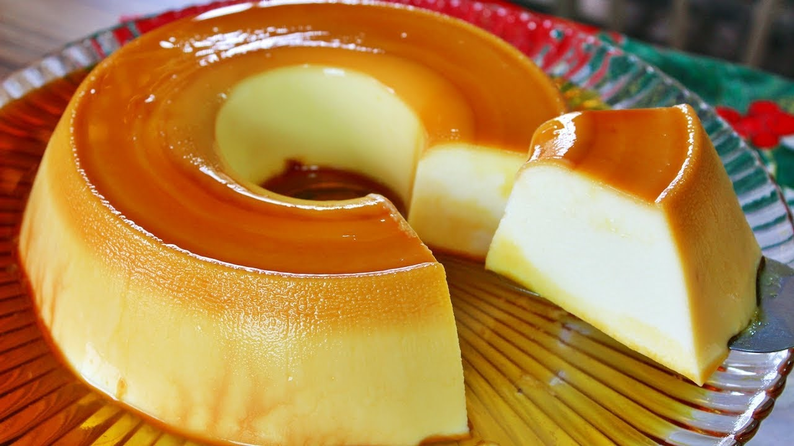

Pudim de Leite Ninho

Uma receita simples feita no liquidificador e que rende uma sobremesa linda para o domingo em família.
Ingredientes
- 10 colheres de leite ninho
- 4 ovos
- 1 xícara de coco ralado
- 9 colheres de açúcar
- 2 e 1/2 copos de leite
Modo de Preparo
- Bata todos os ingredientes no liquidificador.
- Coloque em uma forma caramelizada.
- Leve para assar em banho-maria.